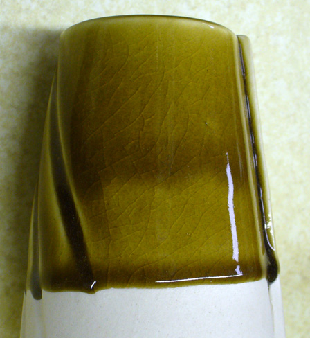
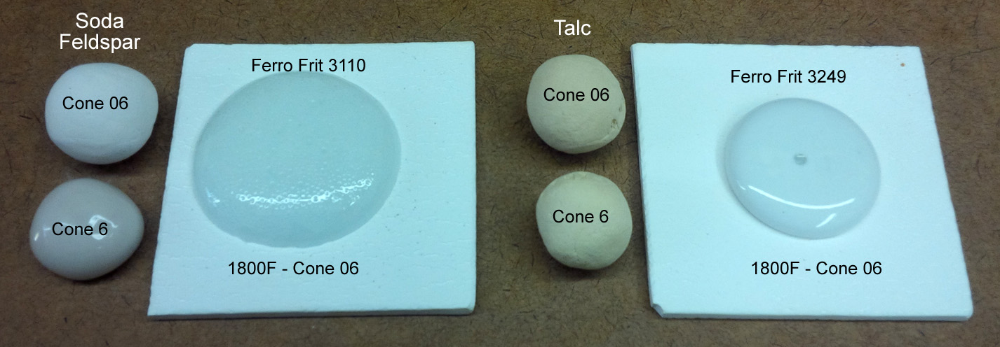
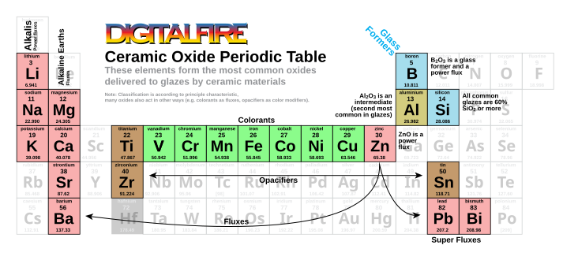
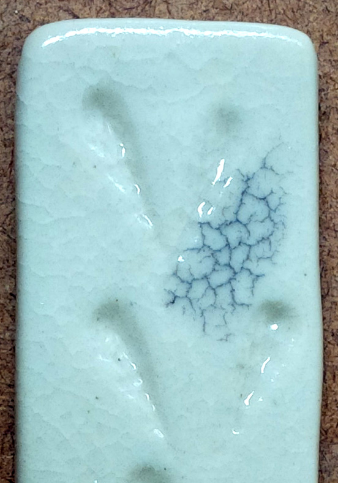

Na2O (Sodium Oxide, Soda)
Data
| Co-efficient of Linear Expansion | 0.387 |
|---|---|
| Frit Softening Point | 920C (From The Oxide Handbook. We also have a figure of 800C?) |
Notes
-Sodium is a slightly more powerful glaze flux than potassium, but otherwise very similar in its behavior and properties. Together they are referenced as KNaO. Sodium belongs to the Alkali group. It is the strongest common flux and works across all temperature ranges from 900-1300C. Thus care must be taken to avoid excessive melt fluidity in glazes having significant sodium. Almost all frits and glazes have at least some KNaO.
-Sodium is sourced primarily from feldspars and frits. Some frits are available that have double the sodium content of feldspar yet very little Al2O3, most have at least some B2O3.
-Sodium produces bright and brilliant glaze surfaces and gives strong color responses to copper, cobalt, and iron (coupling high alkali with low alumina gives the most intense colors). Recommended for iron reds, chrome yellows and manganese violets.
-High-soda glazes can often be soluble and easily scratched, so other oxides are also needed (like CaO, MgO) to produce durability, tensile strength, elasticity and leach resistance. Bottle glass is made using a combination of soda and lime as the fluxes (float and container glasses have about 13% Na2O). Interestingly these glasses have only 1-2% Al2O3, their durability is possible using the chemistry: 13% Na2O, 10% CaO and 75% SiO2.
-Unfortunately, the bright colors possible with high Na2O come at the expense of glaze fit. It has a higher thermal expansion than any other oxide and will promote crazing (especially in glazes lacking silica and/or alumina). Glazes having a high feldspar content (over 35-40%) are thus prime candidates for crazing. If a specific color effect requires high sodium (e.g. copper blue) it may be necessary to adjust the body to eliminate the crazing (increase its thermal expansion). Crystalline glazes, for example, are high in sodium and most often crazed. Celadons and copper reds also tend to be high in sodium, they likewise craze in the hands of many people. However, it is possible to find a compromise between brilliant color and low enough thermal expansion if you substitute some of the KNaO for CaO, MgO, BaO, SrO or Li2O3 and maximize the SiO2 and Al2O3 (while still getting a good melt). Boron can also be employed, it has a very low expansion and enables adding more SiO2 and Al2O3, they push it down further. Some glazes have high sodium content (and thus craze) completely unnecessarily. Cone 10 dolomite mattes are an example, some have 60% feldspar! The mechanism of these is high MgO in an otherwise fairly fluid base. However, MgO has the lowest thermal expansion of all fluxes and it works well even if SiO2 and Al2O3 are high. CaO is a very active flux also (with a much lower thermal expansion), it can easily handle the majority of the fluxing duties. Of course, you need a little glaze chemistry to do all of this.
-Soda works well with boric oxide (and also lithia and potassium) in low-temperature lead-free glazes.
-The alkalis can increase lead solubility.
-A number of common sodium-sourcing materials are soluble (e.g. soda ash, borax) or slightly soluble (e.g. nepheline syenite, sodium frits, Gerstley Borate). Special techniques or considerations are required to use these materials in glazes.
-Sodium can begin to volatilize at high temperatures, this is the mechanism of soda and salt glazing.
A down side of high feldspar glazes: Crazing!

This picture has its own page with more detail, click here to see it.
This reduction celadon is crazing. Why? High feldspar. Feldspar supplies the oxides K2O and Na2O, they contribute the brilliant gloss and great color but the price is very high thermal expansion. Scores of recipes being traded online are high-feldspar, some more than 50%! There are ways to tolerate the high expansion of KNaO, but the vast majority are crazing on all but high quartz bodies. Crazing is a plague for potters. Ware strength suffers dramatically, pieces leak, the glaze can harbor bacteria and customers return pieces. The simplest fix is to transplant the color and opacity mechanism into a better transparent, one that fits your ware (in this glaze, for example, the mechanism is simply an iron addition). Fixing the recipe may also be practical. A 2:1 mix of silica:kaolin has the same Si:Al ratio as most glossy glazes, this glaze could possibly tolerate 10% of that. That would reduce running, improve fit and increase durability. Failing that, the next step is to substitute some of the high-expansion KNaO, the flux, for the low-expansion MgO, that requires doing some glaze chemistry.
Frits melt so much better than raw materials

This picture has its own page with more detail, click here to see it.
Feldspar and talc are both flux sources (glaze melters), they are common in all types of stoneware glazes. But their fluxing oxides, Na2O and MgO, are locked in crystal structures that neither melt early or supply other oxides with which they like to interact. The pure feldspar is only beginning to soften at cone 6. Yet the soda frit is already very active at cone 06! As high as cone 6, talc (the best source of MgO) shows no signs of melting activity at all. But a high-MgO frit is melting beautifully at cone 06! The frits progressively soften, starting from low temperatures, both because they have been premelted and have significant boron content. In both, the Na2O and MgO are free to impose themselves as fluxes, actively participating in the softening process.
Ceramic Oxide Periodic Table

Pretty well all common traditional ceramic base glazes are made from less than a dozen elements (plus oxygen). Go to the full picture of this table and click or tap each of the oxides to learn more (on its page at digitalfire.com). When materials melt, they decompose, sourcing these elements in oxide form. The kiln builds the glaze from them, it does not care what material sources what oxide (assuming, of course, that all materials do melt or dissolve completely into the melt to release those oxides). Each of these oxides contributes specific properties to the glass. So, you can look at a formula and make a good prediction of the properties of the fired glaze. And know what specific oxide to increase or decrease to move a property in a given direction (e.g. melting behavior, hardness, durability, thermal expansion, color, gloss, crystallization). And know about how they interact (affecting each other). This is powerful. A lot of ceramic materials are available, hundreds - that is complicated when individual materials source multiple oxides. Viewing a glaze as a simple unity formula of ceramic oxides is just simpler.
This feldspar melts by itself to be a glaze, but crazes badly

This picture has its own page with more detail, click here to see it.
Pure MinSpar feldspar fired at cone 6 on Plainsman M370 porcelain. Although it is melting, the crazing is extreme! And expected. Feldspars contain a high percentage of K2O and Na2O (KNaO), these two oxides have the highest thermal expansion of any oxide. By far! Thus, glazes high in feldspar (e.g. 50%) are likely to craze. Using a little glaze chemistry, it is often possible to substitute some of the KNaO for another fluxing oxide having a lower thermal expansion.
Links
| Materials |
Feldspar
In ceramics, feldspars are used in glazes and clay bodies. They vitrify stonewares and porcelains. They supply KNaO flux to glazes to help them melt. |
| Materials |
Nepheline Syenite
|
| Materials |
Frit
Frits are made by melting mixes of raw materials, quenching the melt in water, grinding the pebbles into a powder. Frits have chemistries raw materials cannot. |
| Materials |
Soda Feldspar
A feldspar having a KNaO content that predominates in sodium. |
| Oxides | K2O - Potassium Oxide |
| Oxides | KNaO - Potassium/Sodium Oxides |
| Glossary |
Alkali
|
| Glossary |
Ceramic Oxide
In glaze chemistry, the oxide is the basic unit of formulas and analyses. Knowledge of what materials supply an oxide and of how it affects the fired glass or glaze is a key to control. |
| Glossary |
Flux
Fluxes are the reason we can fire clay bodies and glazes in common kilns, they make glazes melt and bodies vitrify at lower temperatures. |
| Glossary |
Crackle glaze
Crackle glazes have a crack pattern that is a product of thermal expansion mismatch between body and glaze. They are not suitable on functional ware. |
| Minerals |
Feldspar
An indispensable material in the ceramic industry. Most ceramic bodies employ feldspar as a flux to |
| Minerals |
Na-Feldspar
Most common feldspars contain both sodium and potassium. The term Na-Feldspar designates one where t |
| Troubles |
Glaze Crazing
Ask the right questions to analyse the real cause of glaze crazing. Do not just treat the symptoms, the real cause is thermal expansion mismatch with the body. |
Mechanisms
| Glaze Color | Oxidation copper blues work best in high alkaline, low alumina glazes. Increasing copper to 4-6% will move color toward turquoise. |
|---|---|
| Glaze Color | Copper red reduction glazes are best in formulations with high alkali. The presence of boron can give a more pleasant red. |
 PayPal | No tracking, No ads, No paywall, No transient content! Just organized, concise information constantly updated and improved. Was this helpful? Consider supporting me. |
| By Tony Hansen Follow me on        |  |
Got a Question?
Buy me a coffee and we can talk 

https://digitalfire.com, All Rights Reserved
Privacy Policy